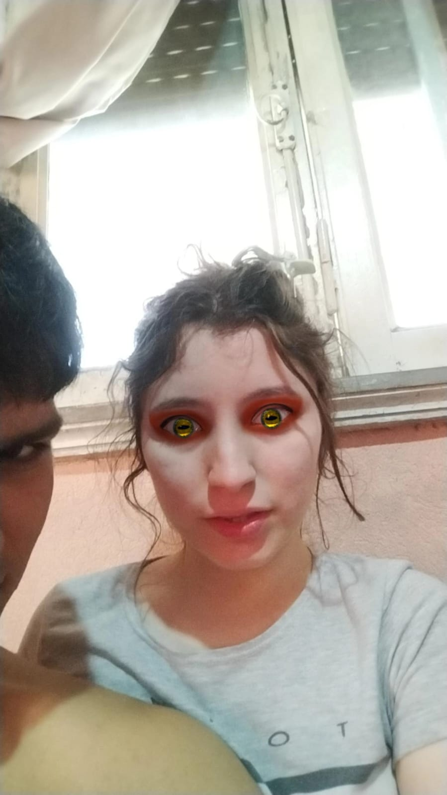
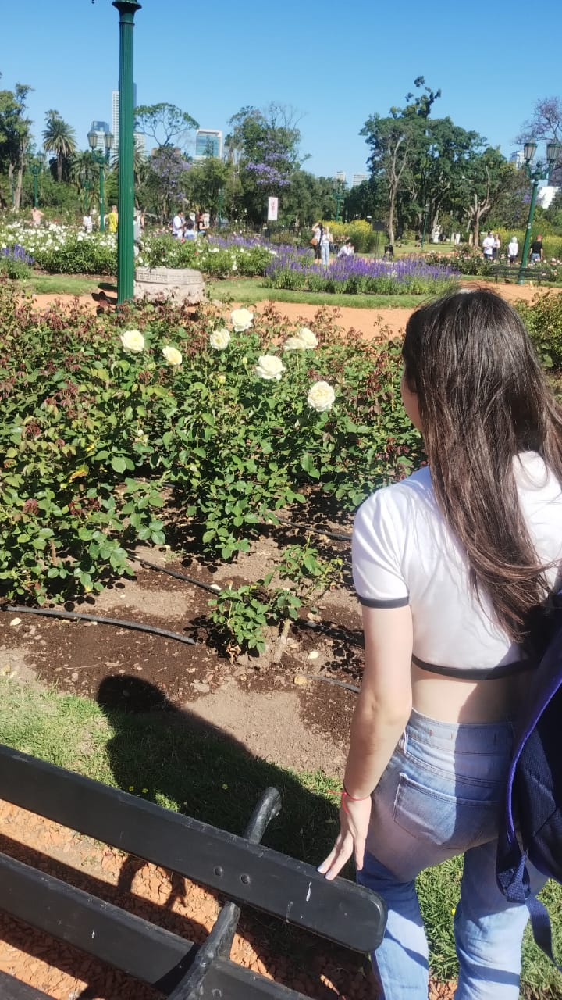
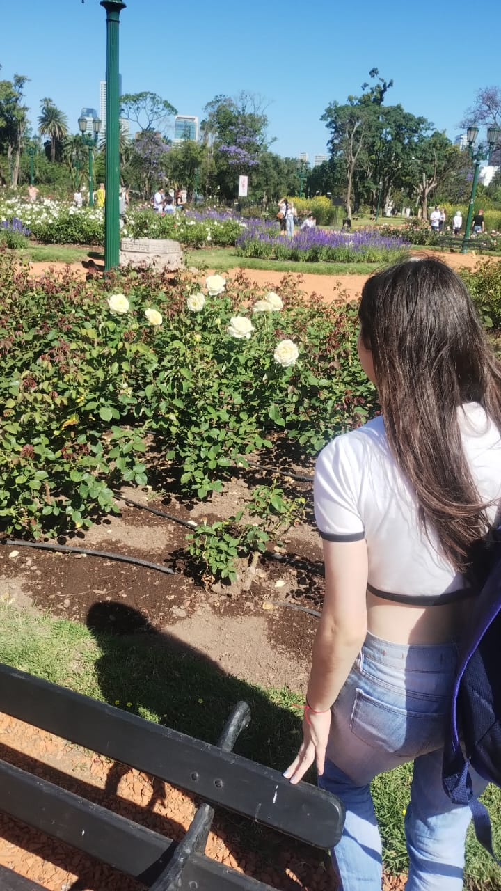
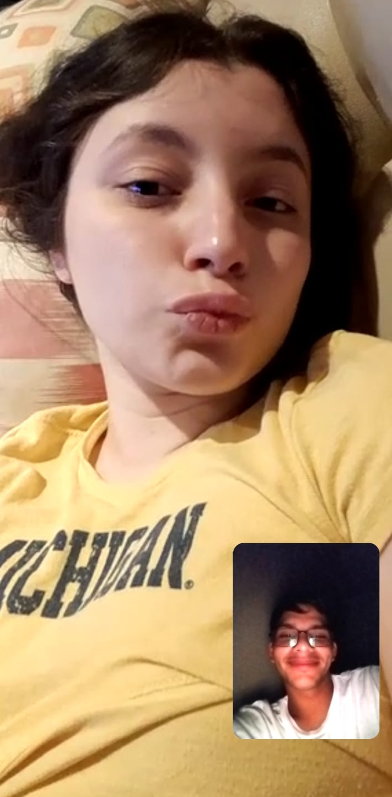
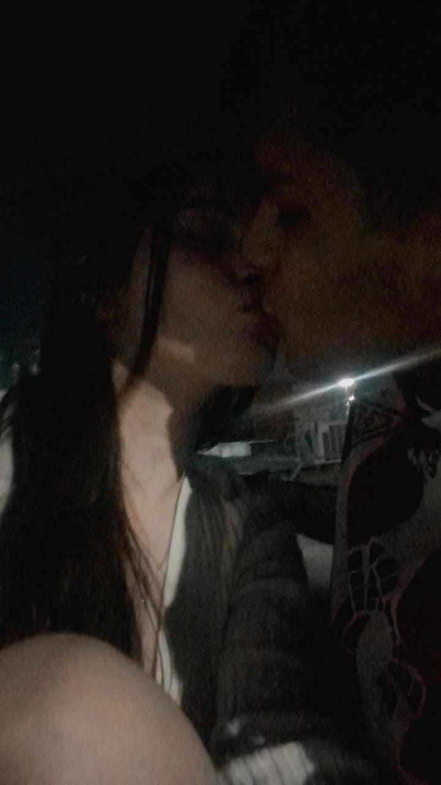
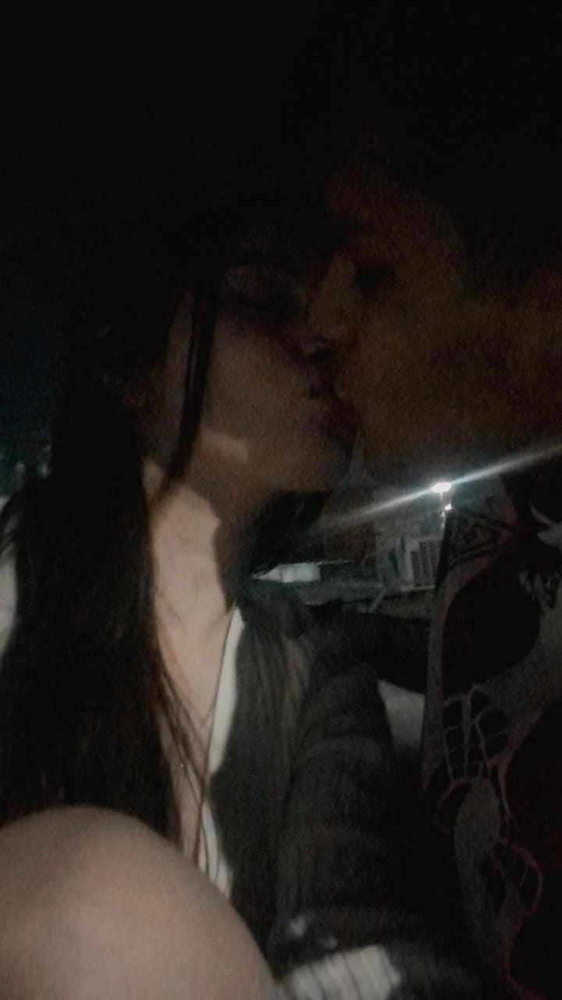

Es amor que talento esto, no soy un experto (aún) en páginas.
Álbum de Abril y Eze
Es amor que talento esto, no soy un experto (aún) en páginas.
La idea es tener muchos de nuestros momentos juntos en un solo lugar y, mas allá de que mis habilidades para hacer páginas sean muy pocas, es mi mejor forma de hacerlo. Sino podría haberlo hecho en un drive pero, qué gracia tiene? Esto está hecho con mi puño y letra... digital

Me acuerdo muchisimas cosas de este dia, por ejemplo, desde ese día siento que al masticar chicle un poco limpio mis dientes. Más allá de ese dato importantisimo, la química que sentí con vos fue inexplicable, no hay palabras para describirlo.


Esa primera cita a mcdonalds (que nunca se repitió porque sabiamente elegimos ir a amadeo) fue la prueba de que no nos gusta salir mucho, recuerdo que lo primero que hicimos de comer es ir al auto JAJAJA. La segunda que fuiste obligada porque habia comida gratis (ni recuerdo por qué AJJSJASJAS)

Sin palabras. El día que todas las florerias 24hs ESTABAN CERRADAS, pero no hizo falta porque vos sos la flor más hermosa de todas. Me hiciste el hombre más feliz mi amor hermosa.
Pausa comercial para fotos nuestras, que yo también tengo que robarme un poco del protagonismo de San Valentin...


Me da mucha risa estas fotos, también me recuerda lo graciosa que sos y como siempre te sumas a las boludeces que te digo. Sos una gran compañera, te amo.


RASEEEENGAN

Volviendo a la normalidad... una de nuestras mejores salidas fue la del rosedal y jardin japonés, es muy lindo conocer lugares juntos.
 

Ahora vamos a mi sección favorita, vos con remeras:
Simplemente hermosa.
No sé como me animé a poner "acabaron juntos" JASJSAJSJAASJ
NUNCA te extrañé tanto, pero esto es una muestra de nuestro amor.
Te amo mucho, las fotos son recuerdos de momentos que pasamos juntos, por eso quiero hacer una sección para nosotros. Sin vos yo seria otra persona, ni peor ni mejor, distinto. Pero estoy muy contento de la persona que soy y mucho te lo debo a vos.
 

Pero como es un trabajo mio, quiero semi-cerrarlo con fotos tuyas, porque vos sos la inspiración de ésto y muchas cosas más (algún día esta página va a quedar más linda).
Ahora solo falta foto de nuestro primer San Valentin

TE AMO ABRIL VALENTINA ESPINOZA BENITEZ